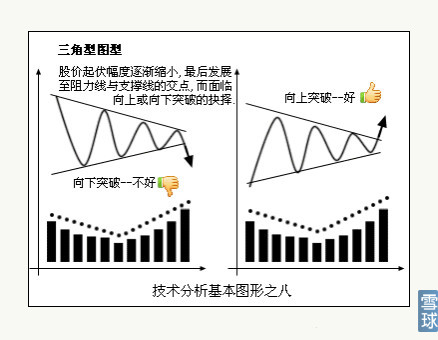

股价毕竟是通过走出来的图形所表达，有了正确基础，学生自然会举一反三应对复杂图形与变形图形，万变不离其宗。人能把书读到极简极薄才是真本事。
下图其实就是我所说的“心”形，不要穿上马甲就不认识了。突破后的回踩动作，就是心右面的那一个点。
由于股价做头都会有两次，也有假突破，这就给套在其中或者上次最高价没有卖出的人有了第二次机会。现在太多主升浪量度升幅走完后的大股票，就在干这件事（昨天我说直线拉升机会的那类股票就属于此类，可见“人从历史中什么也学不会”是多么精辟），最典型的的图形就是600266北京城建最近5天的K线组合，你们再看000050的2014年8月27日假突破后埋葬多少英雄好汉，大幅上涨的股票，最后都会来这么几天。不信？去复盘呀！
下图其实就是我《如何狙击庄股》帖子说的：股价连续2次上攻半年线要重视：30、60、120日长短均线都拐头向上且纠缠在一起，股价上涨的概率大于99%且股价刚刚开始加速的助跑阶段。
下图就是长中短期均线全部空头发散性排列反压股价，就是长时间下跌的开始。换句话说，就是把要预备长时间上涨的多头发散性均线股票反过来看就好。
下图就是大圆弧形，图形越大（意味着时间越长）股价越高。最后才在最右边开始连续涨停拉高，我《授人以渔系列之三：主升浪都是在相对高位展开》有专门讲述。正因为主升浪不是底部展开，这个锅底部折磨最要散户的命。
今天（2014年12月31日）的002266浙富控股将近一个月的图形就是右面这样，箱体内K线越是大开大合，成交量越是巨大，向上空间就越大，这种图形底部放量大于上次头部成交量就一定能克服上次头部价格，反之高度就越小。一般会有很明显的五浪波动。你们数右边图形，第一次向下为1，向上为2，再下为3，再上为四，再下为5，再上为6，冲破上沿时要巨量突破才好确认，一般冲破后，由于巨量，会再冲高10%—15%就会回踩，这时候就是上车机会。就如同《技术分析图形之二》中右肩突破后的回踩动作。如果没有回踩只能说明更强悍，更值得去追。你们研究最近的券商股就知道我在说什么了。

下图其实就是上图穿了一件马甲。万变不离其衷。正规名词叫三角形突破，分向下突破和向上突破两种状况。

以上八种图形，囊括了古今中外股市、期货全部图形，大图形中套小图型，小图型隐匿在大图型之中。底部是这样，顶部也是这样。99%人只会机械对照图形，不知道看图型的真谛在于：目前股价是处于底部？上升或者下降中继？还是历史顶部的位置